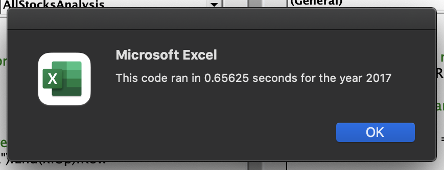
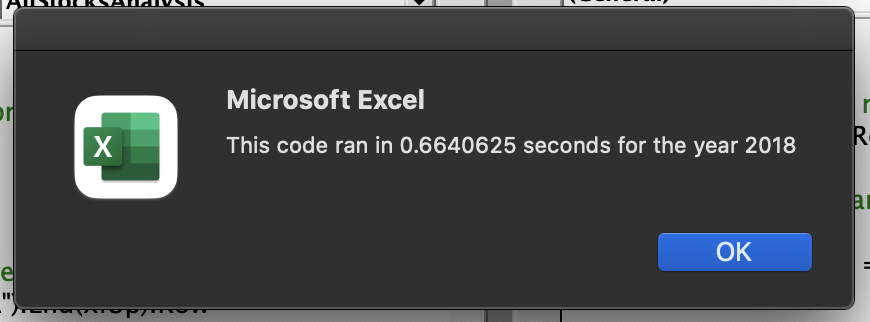

Challenge: Refactoring VBA Code
| <<Back |
Overview
During this module, we managed to automate various basic Excel tasks using Visual Basic for Applications. The most important part of the process was that we managed to do it without focusing too much on the scripting language but rather the problems we wanted to solve.
Now that the mission is accomplished and the code works, we venture into optimization in order to make sure our code can cover more cases, particularly those cases where we have to work with data orders of magnitude bigger.
Results
Our initial code took about call_unoptimized_2017 seconds to run in both years.
Initial, unoptimized code.
 The main problem with that version is that in had both conditional and nested loops that weren’t completely necessary.
This is how our main loop looked initially.
For i = 0 To 11 ticker = tickers(i) totalVolume = 0 Worksheets("2018").Activate For j = 2 To RowCount If Cells(j, 1).Value = ticker Then totalVolume = totalVolume + Cells(j, 8).Value End If If Cells(j - 1, 1).Value <> ticker And Cells(j, 1).Value = ticker Then startingPrice = Cells(j, 6).Value End If If Cells(j + 1, 1).Value <> ticker And Cells(j, 1).Value = ticker Then endingPrice = Cells(j, 6).Value End If Next j Worksheets("All Stocks Analysis").Activate Cells(4 + i, 1).Value = ticker Cells(4 + i, 2).Value = totalVolume Cells(4 + i, 3).Value = endingPrice / startingPrice - 1 Next i
- The outer loop in this case is not necessary as we can initialize a different counter that is updated during the inner loop.
- There are too many single
If-Thenconditionals, it is better to reduce them. - We can move the outer loop to a separate process so we don’t have to call
Worksheets("").Activateevery time. - Having separate loops can improve readability and help us find bugs easily.
This is how the main loop looks after refactoring it.
For i = startIndex To RowCount tickerVolumes(tickerIndex) = tickerVolumes(tickerIndex) + Cells(i, 8).Value If Cells(i, 1).Value <> Cells(i - 1, 1).Value Then tickerStartingPrices(tickerIndex) = Cells(i, 6).Value End If If Cells(i, 1).Value <> Cells(i + 1, 1).Value Then tickerEndingPrices(tickerIndex) = Cells(i, 6).Value tickerIndex = tickerIndex + 1 End If Next i
Of course we moved half of the process to another loop, but this helps us a lot when reading it even without comments.
Flat is better than nested. -Tim Peters.
Summary
| Ticker | Return 2017 | Return 2018 | Change |
|---|---|---|---|
| AY | 8.9% | -7.3% | -16.2% |
| CSIQ | 33.1% | -16.3% | -49.4% |
| DQ | 199.4% | -62.6% | -262.0% |
| ENPH | 129.5% | 81.9% | -47.6% |